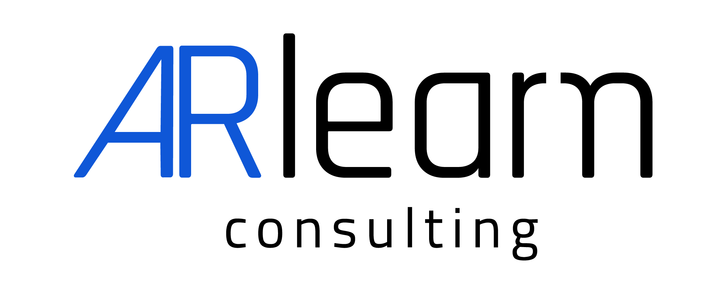

En ARlearn nos gustan las cosas bien hechas por eso el diseño es parte de nuestro perfil profesional.
Conozcan nuestro departamento de diseño:

ARlearn nació de la necesidad de obtener identidad como equipo. Demostrar solídez. Aún somos estudiantes con mucho que aprender pero nos sentimos lo suficientemete profesionales respecto a manera de trabajar, enorgullenciendonos por cada logro y buena calificación.
En cada trabajo intentamos explotar todo nuestro potencial y presentarnos nuestro perfil en todos los ambitos del desarrollo de software.
No queremos pecar de pretenciosos, ni dejar nada sentado aún queda mucho camino por recorrer y desafios que superar. Nos gusta aprender y a su vez encontrar nuestro perfil profesional.
Nos gusta poner lo mejor de nosotros, ser amigables al usuario, crear interfaces vistosas, y ponernos a prueba a diario. Nos gusta involucranos con nuevos lenguajes, experimentar con bases de datos, Photoshop e Illustrator para nuestros diseños de branding, After effects y CSS para nuestras animaciones. Amamos lo que hacemos, y la carrera que elegimos y deseamos convertinos en profesionales. Agradacemos cada calificación y tambien cada fracaso, ya que a partir de ese punto supimos reiniciarnos, encaminarnos para crecer y ser mejores.
Equipo de ARlearn consulting
Concepto. Desarrollo. Diseño. Confiabilidad